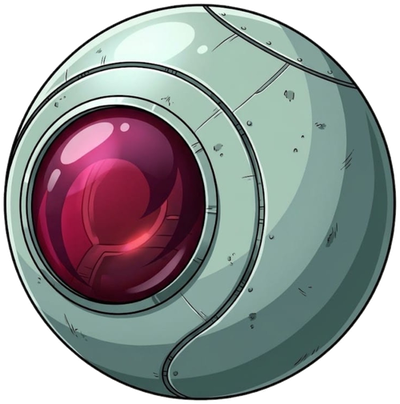
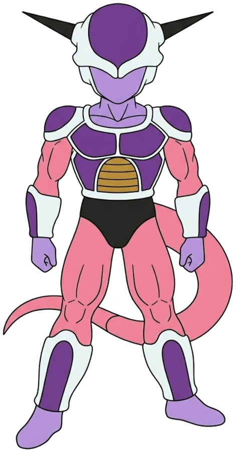
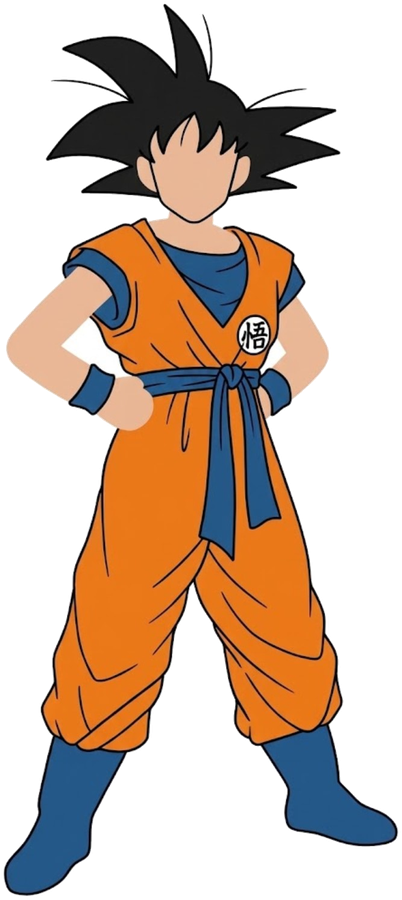

EL PUERTO DE NAMEK · ELIGE TU DESTINO

COMBATE CONTRA FREEZERE · VIAJAR A LA ARENAPERSONAJES · APIE · EXPLORAR
TRANSFORMACIONES · APIE · EXPLORAR
⌂MUNDO PRINCIPALE · VOLVER
↩
REGRESAR AL PUERTOPULSA E

GOKUNORMAL
8/8F · KI
FREEZER · FASE I1 / 3
5/5EMPERADOR DEL MAL
PUERTO DE NAMEKAcércate a una cápsula y pulsa E.